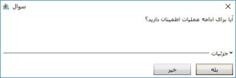
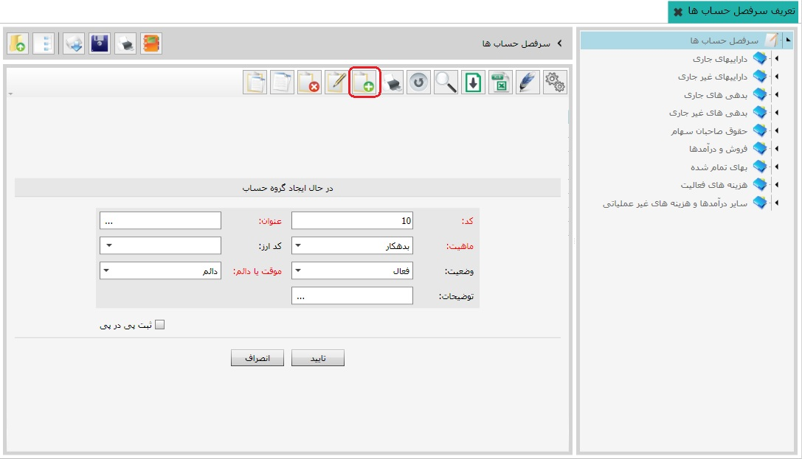
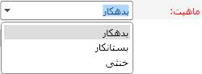

پرینت سرفصل: به شما این امکان را می دهد که لیست
سرفصل های حساب را به شکل درختی پرینت کنید.
پرینت سرفصل: به شما این امکان را می دهد که لیست
سرفصل های حساب را به شکل درختی پرینت کنید.
از منوی سمت راست نرم افزار روی گزینه تعریف سرفصل حساب ها کلیک کنید تا صفحه مربوط به آن اجرا شود. برای شروع کار با سیستم حسابداری نیاز دارید که سرفصل حساب های مورد نیازتان (که از آن تعبیر به کدینگ حساب ها می شود) را تعریف کنید. امکان تعریف سرفصل حساب ها از طریق نرم افزار برای شما فراهم شده است. اما جهت بهره وری مطلوب تر در نرم افزار سایان سرفصل های پیش فرض جامعی تعریف شده است که در صورت تمایل می توانید آنها را نیز بازیابی و بر حسب نیاز سازمانی خود ویرایش نمایید. برای این منظور توضیحات بازیابی سر فصل های پیش فرض نرم افزار ارائه خواهد شد. و در ادامه به نحوه تعریف کردن گروه های حساب و حساب های کل و معین خواهیم پرداخت. برای بارگذاری سر فصل پیش فرض، در صفحه تعریف سرفصل حساب ها، از نوار ابزار در تصویر زیر آیکن «خواندن سر فصل» از فایل (Ctrl+ O)را که در کادر شماره یک قرار دارد را کلیک کنید تا پنجره مربوطه نمایش داده شود.

همان طور که در تصویر بالا مشاهده می کنید، در این پنجره فایل حاوی سرفصل حساب پیش فرض با عنوان «کدینگ عمومی» در کادر شماره دو وجود دارد. کدینگ عمومی را انتخاب و سپس روی دکمه Open کلیک کنید، پیغام زیر ظاهر خواهد شد:
برای ایجاد کدینگ پیش فرض، در تصویر فوق لطفا دکمه «بله» را کلیک کنید.

همانند تصویر فوق سرفصل های بازیابی شده را مشاهده می کنید، صفحه شامل دو قسمت می باشد، در سمت راست نمودار درختی سرفصل حساب ها وجود دارد. این سر فصل دارای گروه های حساب می باشند و با رنگ آبی مشخص شده و برای هر یک از گروه های حساب، حساب های کل متناسب آنها تعریف و به رنگ سبز مشاهده می شوند. هر کدام از حساب های کل دارای حساب های معین متناسب با خود می باشند و به رنگ زرد قابل مشاهده می باشد. با انتخاب هر مجموعه از نمودار درختی در سمت راست، حساب های مرتبط با آن در جدول سمت چپ تصویر بالا نمایان خواهد شد. در این جدول «ماهیت» حساب ها و «موقت یا دائم» بودن آنها تعیین شده است.
کاربرد سایر کلید ها در صفحه تعریف سرفصل حساب ها به شرح زیر است:
با استفاده از این ابزار می توانید سرفصل های حساب تعریف شده را در فایلی با فرمت xml بر روی کامپیوتر خودتان ذخیره کنید.
پرینت سرفصل: به شما این امکان را می دهد که لیست
سرفصل های حساب را به شکل درختی پرینت کنید.
مشاهده لایه ها: با کلیک بر روی هر یک از حساب ها در جدول صفحه تعریف سرفصل حساب ها و انتخاب «مشاهده لایه ها»، معین های همان حساب را به همراه لایه های مرتبط با آن در پنجره جداگانه ای قابل نمایش می باشد.
 نمایش درخت: این ابزار برای نمایش درخت سرفصل حساب ها در سمت
راست صفحه و یا عدم نمایش درخت استفاده می شود.
نمایش درخت: این ابزار برای نمایش درخت سرفصل حساب ها در سمت
راست صفحه و یا عدم نمایش درخت استفاده می شود.
برگشت به قبلی: در هر صفحه ای که قرار داشته باشید با استفاده از اینابزار می توانید به صفحه قبل از آن بازگردید.
برای ایجاد گروه حساب، از نمودار درختی سرفصل حساب ها را انتخاب کنید تا گروه های حساب داخل آن در جدول سمت چپ نمایان شوند، پس از این جدول روی گزینه «اضافه» کلیک کنید تا صفحه ایجاد گروه حساب اجرا شود :

در این قسمت عنوان گروه حساب مورد نظر را وارد نمایید.
علاوه بر آن ماهیت گروه حساب مورد نظر را می توانید از بین سه ماهیت بدهکار، بستانکار و خنثی انتخاب کنید.

همان طور که می دانید در حسابداری دو نوع حساب تعریف شده است، «حساب های دائم» که از یک دوره مالی به دوره مالی دیگر منتقل می شوند (مثل حساب دارایی ها) و «حساب های موقت» که با پایان دوره مالی بسته می شوند و در دوره مالی پس از آن مانده حساب ها از صفر شروع می شود (مثل فروش و درآمد). شما می توانید نوع گروه حساب مورد نظرتان را از این قسمت انتخاب کنید. در صورت تمایل می توانید در قسمت توضیحات برای گروه حساب مورد نظر خود شرح مختصری مرقوم فرمایید و پس از آن کلید «تایید» را کلیک کنید تا گروه حساب مورد نظر شما ایجاد شود.

همچنین می توانید ارز محاسباتی خود را تعیین نمایید، لطفا برای تعریف ارز به اطلاعات پایه و مشترک مراجعه کنید.
برای ایجاد حساب کل در گروه های حساب ابتدا از نمودار درختی گروه حسابی را که تصمیم به تعریف حساب کل آن را دارید، انتخاب نمایید تا لیست حساب های کل آنان در جدول سمت چپ نمایش داده شود، پس از آن آیکن «اضافه» را کلیک کنید تا فرم ایجاد حساب کل اجرا و بر اساس آن اطلاعات ایجاد گروه حساب را تکمیل و تایید نمایید.

برای ایجاد حساب معین در حساب کل، از نمودار درختی ابتدا گروه حساب سپس حساب کل مورد نظر را انتخاب نمایید تا در لیست سمت چپ حساب های معین موجود در حساب کل نمایان شوند. اکنون مجددا آیکن اضافه را کلیک کنید تا فرم ایجاد حساب معین برای شما اجرا شود و همانند فرمهای پیشین تکمیل و تایید کنید.